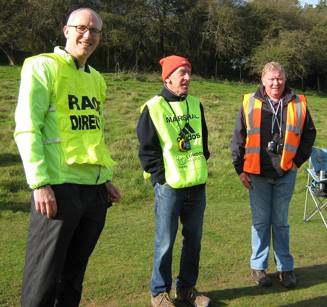
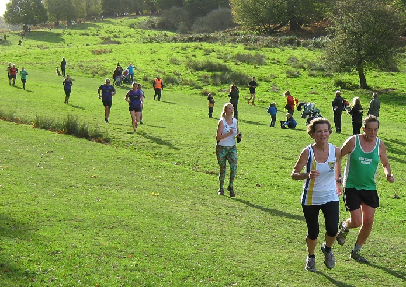

The Sevenoaks AC women decisively won their team race at the first match of the Kent Fitness League at Knole Park on 22 October. Jacqui O'Reilly led the team in fourth, and she was backed up by Heather Fitzmaurice (2nd W45), new member Vanessa Gilmartin, and Pauline Dalton (3rd W50) scoring for the team. And with James Mason in 3rd, the men's team were second and the combined team second. Andy Nicholl, Andy Ashlee (M40 scorer), Andrew Milne, Edmund Grobel, Lee Lintern and M50 scorers James Baker and Michael McCarthy scored for the men. Great veteran performances were also contributed by Jim Fitzmaurice (2nd M70/1st M75) and Sally Shewell (3rd W55).
Thanks to Duncan for stepping in to direct the event in Rob Carr's absence, and to his team of trusty club stalwarts who helped on the day.
The full results of the 35 SAC runners were:
| Ov Pos | Lg Pos | Runner | Age | Time | Club | Rating | # Races |
|---|---|---|---|---|---|---|---|
| 3 | 3 | James Mason | 34 | 33:27 | Sevenoaks AC | 99.38 | 7 |
| 28 | 28 | Andy Nicoll | 37 | 36:26 | Sevenoaks AC | 91.67 | 9 |
| 35 | 35 | Andy Ashlee | 48 | 36:36 | Sevenoaks AC | 89.51 | 21 |
| 36 | 36 | Andrew Milne | 35 | 36:41 | Sevenoaks AC | 89.20 | 11 |
| 49 | 48 | Edmund Grobel | 38 | 37:29 | Sevenoaks AC | 85.49 | 3 |
| 50 | 49 | Lee Lintern | 37 | 37:32 | Sevenoaks AC | 85.19 | 26 |
| 53 | 52 | James Baker | 52 | 37:37 | Sevenoaks AC | 84.26 | 16 |
| 59 | 58 | Daniel Witt | 42 | 37:53 | Sevenoaks AC | 82.41 | 40 |
| 62 | 61 | Jimmy George | 36 | 37:55 | Sevenoaks AC | 81.48 | Debut |
| 68 | 66 | Russell Crane | 35 | 38:14 | Sevenoaks AC | 79.94 | Debut |
| 69 | 67 | Keith Brown | 46 | 38:18 | Sevenoaks AC | 79.63 | 11 |
| 79 | 77 | Andrew Mead | 48 | 38:55 | Sevenoaks AC | 76.54 | 29 |
| 93 | 4 | Jacqui O'Reilly | 33 | 39:20 | Sevenoaks AC | 98.19 | 2 |
| 104 | 97 | Michael McCarthy | 52 | 39:51 | Sevenoaks AC | 70.37 | 21 |
| 119 | 111 | Alan Lewis | 51 | 40:45 | Sevenoaks AC | 66.05 | 4 |
| 121 | 113 | Andy Evans | 47 | 40:54 | Sevenoaks AC | 65.43 | 35 |
| 129 | 10 | Heather Fitzmaurice | 47 | 41:04 | Sevenoaks AC | 94.58 | 65 |
| 143 | 12 | Vanessa Gilmartin | 42 | 41:41 | Sevenoaks AC | 93.37 | Debut |
| 165 | 149 | Andrew Rackham | 44 | 42:39 | Sevenoaks AC | 54.32 | 16 |
| 177 | 158 | Tony Waldron | 50 | 43:16 | Sevenoaks AC | 51.54 | 18 |
| 183 | 21 | Pauline Dalton | 53 | 43:34 | Sevenoaks AC | 87.95 | 38 |
| 211 | 183 | Tony Horlock | 56 | 44:32 | Sevenoaks AC | 43.83 | 7 |
| 247 | 207 | Simon Hallpike | 64 | 46:04 | Sevenoaks AC | 36.42 | 43 |
| 263 | 43 | Sarah Shewell | 58 | 46:53 | Sevenoaks AC | 74.70 | 96 |
| 279 | 229 | Graham Dwyer | 45 | 47:37 | Sevenoaks AC | 29.63 | Debut |
| 305 | 60 | Marion Van Lille | 32 | 48:35 | Sevenoaks AC | 64.46 | Debut |
| 312 | 248 | Lyndon Collins | 67 | 48:57 | Sevenoaks AC | 23.77 | 61 |
| 314 | 249 | Geoff Kitchener | 67 | 49:02 | Sevenoaks AC | 23.46 | 65 |
| 317 | 252 | Rob Peers | 52 | 49:10 | Sevenoaks AC | 22.53 | 22 |
| 374 | 89 | Becca Crowe | 56 | 52:00 | Sevenoaks AC | 46.99 | 6 |
| 380 | 92 | Happy Fisher | 41 | 52:24 | Sevenoaks AC | 45.18 | 45 |
| 394 | 291 | James Fitzmaurice | 75 | 53:11 | Sevenoaks AC | 10.49 | 62 |
| 413 | 298 | Lionel Stielow | 68 | 54:40 | Sevenoaks AC | 8.33 | 4 |
| 416 | 299 | Maurice Marchant | 69 | 55:07 | Sevenoaks AC | 8.02 | 31 |
| 417 | 116 | Lorna Baker | 46 | 55:08 | Sevenoaks AC | 30.72 | Debut |

The full results are here.